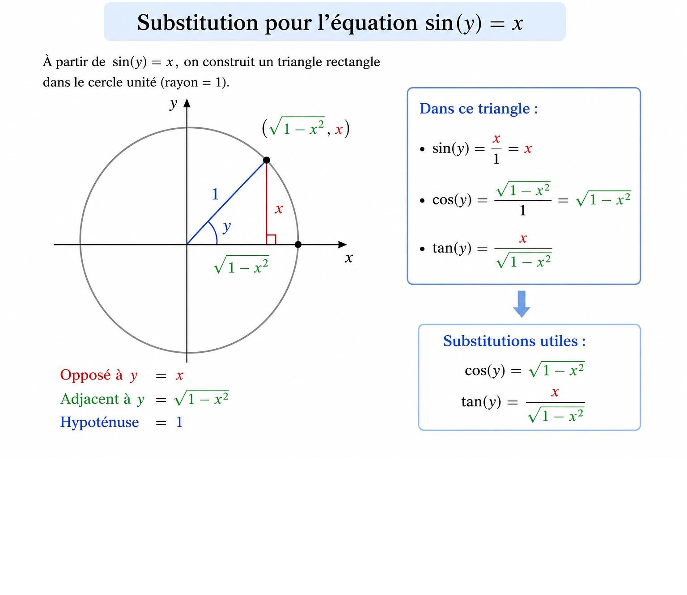

Principe général
On transforme la fonction en équation implicite, puis on dérive des deux côtés en appliquant la règle de la chaîne.
Règles essentielles
\( \frac{d}{dx}(y)=y' \quad,\quad \frac{d}{dx}(y^n)=ny^{n-1}y' \)
\( \frac{d}{dx}(\sin y)=\cos(y)y' \quad,\quad \frac{d}{dx}(e^y)=e^y y' \)

Trigonométrie inverse (méthode implicite)
1 — Arcsin
Exemple : \( y=\arcsin(x) \)
Équation implicite :
\( \sin(y)=x \)
Dérivation :
\( \cos(y)y'=1 \)
Isolation :
\( y'=\frac{1}{\cos(y)} \)
Substitution :
\( \cos(y)=\sqrt{1-x^2} \)
\( y'=\frac{1}{\sqrt{1-x^2}} \)
2 — Arccos
\( y=\arccos(x) \Rightarrow \cos(y)=x \)
\( -\sin(y)y'=1 \)
\( y'=-\frac{1}{\sin(y)} \)
\( \sin(y)=\sqrt{1-x^2} \)
\( y'=-\frac{1}{\sqrt{1-x^2}} \)
3 — Arctan
\( y=\arctan(x) \Rightarrow \tan(y)=x \)
\( \sec^2(y)y'=1 \)
\( y'=\frac{1}{\sec^2(y)} \)
\( \sec^2(y)=1+x^2 \)
\( y'=\frac{1}{1+x^2} \)
4 — Arcsec
\( y=\operatorname{arcsec}(x) \Rightarrow \sec(y)=x \)
\( \sec(y)\tan(y)y'=1 \)
\( y'=\frac{1}{\sec(y)\tan(y)} \)
\( \tan^2(y)=x^2-1 \)
\( y'=\frac{1}{|x|\sqrt{x^2-1}} \)
Exponentielle et logarithme avec la dérivation implicite
5 — Exponentielle
Exemple : \( y=e^x \)
On écrit :
\( \ln(y)=x \)
Dérivation :
\( \frac{1}{y}y'=1 \)
\( y'=y=e^x \)
6 — Exponentielle base a
\( y=a^x \Rightarrow \ln(y)=x\ln(a) \)
\( \frac{1}{y}y'=\ln(a) \)
\( y'=a^x\ln(a) \)
7 — Logarithme naturel
\( y=\ln(x) \Rightarrow e^y=x \)
\( e^y y'=1 \)
\( y'=\frac{1}{x} \)
8 — Log base 10
\( y=\log_{10}(x) \Rightarrow 10^y=x \)
\( 10^y\ln(10)y'=1 \)
\( y'=\frac{1}{x\ln(10)} \)
9 — Log base a
\( y=\log_a(x) \Rightarrow a^y=x \)
\( a^y\ln(a)y'=1 \)
\( y'=\frac{1}{x\ln(a)} \)